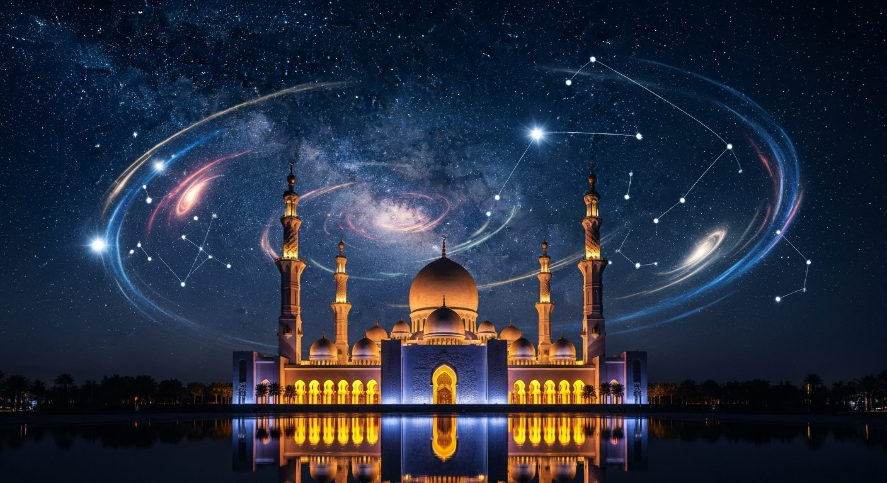
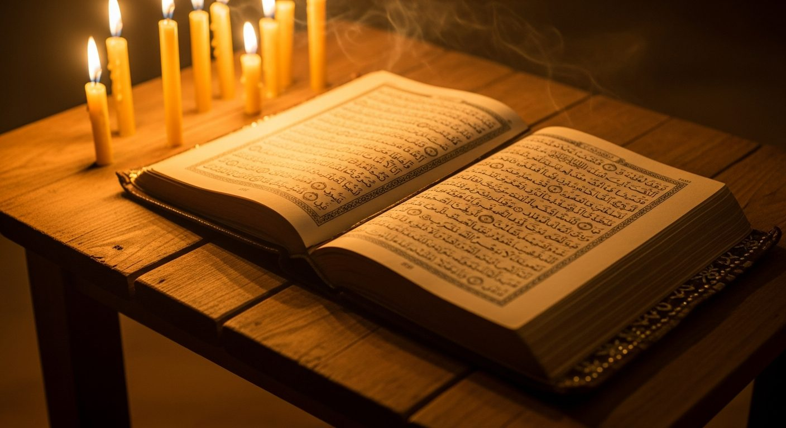
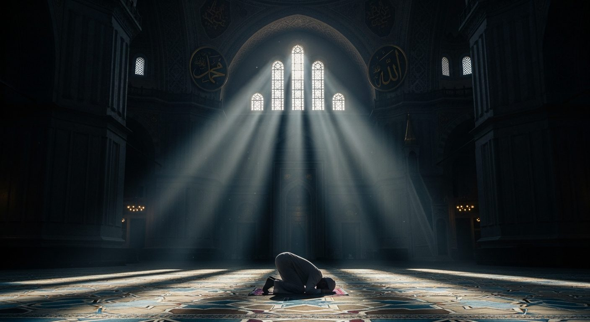
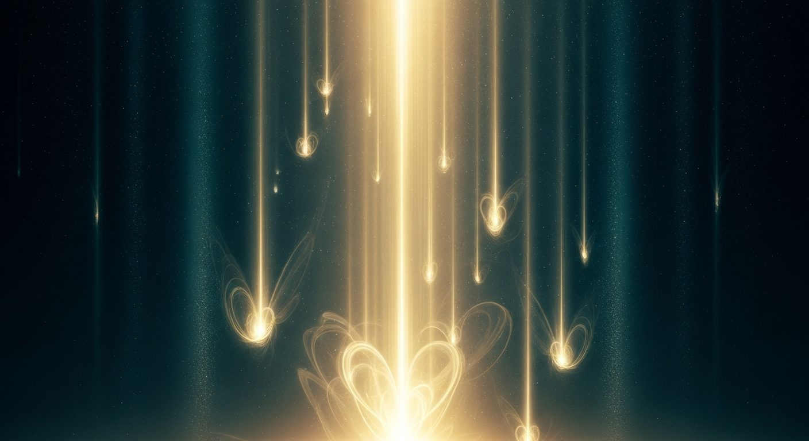

The Night of Power
لَيْلَةُ الْقَدْرِ
If the Night of Ascent carried the Prophet ﷺ upward through the seven heavens, the Night of Descent is its mirror: the night the heavens draw near to earth. Laylat al-Qadr — the Night of Power, the Night of Decree — is the holiest night of the year, when the Qur'ān began its descent, the angels fill the earth, and divine mercy flows freely until the break of dawn.

What follows draws together the revelation of the Qur'ān, the cosmic event of the descent, the arc of the night from dusk to dawn, the way of the Prophet ﷺ, and the reflections of the great mystics — al-Ghazālī, Ibn ʿArabī, and the Sufi saints — on the meaning of the most sacred of nights.
Sūrat al-Qadr

إِنَّا أَنزَلْنَاهُ فِي لَيْلَةِ الْقَدْرِ
وَمَا أَدْرَاكَ مَا لَيْلَةُ الْقَدْرِ
لَيْلَةُ الْقَدْرِ خَيْرٌ مِّنْ أَلْفِ شَهْرٍ
تَنَزَّلُ الْمَلَائِكَةُ وَالرُّوحُ فِيهَا بِإِذْنِ رَبِّهِم مِّن كُلِّ أَمْرٍ
سَلَامٌ هِيَ حَتَّىٰ مَطْلَعِ الْفَجْرِ
"Innā anzalnāhu fī laylati l-qadr. Wa mā adrāka mā laylatu l-qadr. Laylatu l-qadri khayrun min alfi shahr. Tanazzalu l-malāʾikatu wa-r-rūḥu fīhā bi-idhni rabbihim min kulli amr. Salāmun hiya ḥattā maṭlaʿi l-fajr."
"Indeed, We sent the Qur'ān down during the Night of Decree. And what can make you know what is the Night of Decree? The Night of Decree is better than a thousand months. The angels and the Spirit descend therein by permission of their Lord for every matter. Peace it is until the emergence of dawn."
Qur'ān 97:1–5
What Descends, and When
The Qur'ān does not simply say this night is holy. It tells us what happens — a specific, cosmic event that unfolds from dusk to dawn.
تَنَزَّلُ الْمَلَائِكَةُ وَالرُّوحُ فِيهَا بِإِذْنِ رَبِّهِم مِّن كُلِّ أَمْرٍ
"The angels and the Spirit descend therein by permission of their Lord — for every matter." — Qur'ān 97:4
The Angels
In numbers that exceed all counting, the angels descend to the earth on this night. The Prophet ﷺ said: "On Laylat al-Qadr, the angels on earth are more numerous than the pebbles of the ground." They fill every space between the heavens and the earth, bearing salutations and blessings upon every soul engaged in remembrance, prayer, and supplication.
The Spirit
The Qur'ān singles out al-Rūḥ — the Spirit, identified by the classical commentators as Jibrīl (Gabriel), the greatest of the angels — with a special mention alongside all the others. His descent is not ordinary: he descends once a year, on this night alone. Ibn Kathīr writes that Jibrīl descends with a host of angels, carrying all that has been decreed for the coming year.
Every Decree
The phrase min kulli amr — "for every matter" — is among the most commented-upon in the Qur'ān. The scholars of tafsīr agree: on this night the decrees for the coming year are transferred from the Preserved Tablet into the hands of the angels who carry them. Every birth and every death. Every provision and every trial. The world of the coming year is made distinct on this single night.
Peace
The Qur'ān closes its description with a word that is itself the conclusion: Salām — Peace. Not the peace of absence, but a presence so total it leaves no room for disturbance. The classical commentators say this peace envelops the earth from dusk to dawn, the angels greeting every believer they pass, the very air carrying something of the divine tranquillity. It is peace until the emergence of dawn.
The Arc of the Night — From Dusk to Dawn
According to the majority of scholars, the Night of Qadr begins at sunset — for in the Islamic reckoning, night precedes day. The angels begin their descent. The doors of heaven are opened.
The Prophet ﷺ would wake his family on the odd nights of the last ten days and intensify worship after ʿIshāʾ. The night prayer on Laylat al-Qadr is better than a thousand months of night prayers.
The last third of the night is the hour of divine nearness in every night of the year. On Laylat al-Qadr it is the hour within the hour — when divine mercy and proximity reach their absolute peak.
The Qur'ān is precise: "Peace it is until the emergence of dawn." At Fajr the descent ends. The channel closes. The decrees have been set. The angels return. What was available for the whole night is now carried forward into the year.
The Way of the Messenger

The Prophet ﷺ taught his community how to meet this night — how to seek it, how to stand in it, and what to ask for above all else.
- "Whoever stands [in prayer] in Laylat al-Qadr out of faith and seeking reward, his previous sins will be forgiven." (Saḥīḥ al-Bukhārī)
- "Search for Laylat al-Qadr in the odd nights of the last ten nights of Ramaḍān." (Saḥīḥ al-Bukhārī)
- "Seek it on the 27th night." (Various narrations)
Al-Ghazālī
Iḥyāʾ ʿUlūm al-Dīn
Ibn ʿArabī
al-Futūḥāt al-Makkiyya

What the Masters Found
Across centuries, the Sufi saints returned to this night and wrote what they discovered there. Their words are not theology — they are reports from the interior.
Rābiʿa al-ʿAdawiyya al-Baṣrī
Freed from slavery, she withdrew into the desert and spent her nights alone with God. She is the one who, above all others in the tradition, stripped worship of every motive but love. Her teachings on Laylat al-Qadr are not explanations — they are acts of pure presence.
"O my Lord, the stars glitter and the eyes of men are closed. Kings have locked their doors and each lover is alone with his love. Here, I am alone with You."Her night prayer — translated by Charles Upton
"If I adore You out of fear of Hell, burn me in Hell. If I adore You out of desire for Paradise, lock me out of Paradise. But if I adore You for Yourself alone, do not deny to me Your eternal beauty."Attributed in classical Sufi biographical literature
"An awakened heart is one which is lost in God."Sayings preserved in the Sufi tradition
Jalāl ad-Dīn Rūmī
The Masnavi — Rūmī's 25,000-verse masterwork — is called "the Qur'ān in Persian." In it, he goes directly to Laylat al-Qadr: not as a date to be found, but as a spiritual principle. Truth itself, he says, is the Night of Power — hidden within ordinary moments so that the soul is forced to search every night with sincerity. No night is guaranteed to be the Night of Power; but no night is empty of its light either.
"Truth is the Night of Power, hidden amid the other nights so the soul may try each one. Not all nights are the Night of Power, yet all nights are not empty of it either."Masnavi, Book II, vv. 2935–2936 · trans. Camille & Kabir Helminski
"If you stay awake for an entire night, watch out for a treasure trying to arrive — you can keep warm by the secret sun of the night, keeping your eyes open for the softness of dawn. Night is the bringer of gifts. Moses went on a ten-year journey during a single night, invited by a tree to watch the fire and light."Dīvān-e Shams-i Tabrīzī, Ghazal 258 · trans. Nader Khalili
"The breeze at dawn has secrets to tell you. Don't go back to sleep. Be patient where you sit in the dark. The dawn is coming."Attributed to Rūmī
"Silence is the language of God. All else is poor translation."Masnavi, Book I
Nūr ad-Dīn Jāmī
A poet-theologian in the lineage of Ibn ʿArabī, Jāmī declined court patronage and spent his life writing on the unity of Being and the soul's longing for the hidden face of God. His epitaph itself is a meditation on the night of spiritual concealment.
"When your face is hidden from me, like the moon hidden on a dark night, I shed stars of tears and yet my night remains dark in spite of all those shining stars."Jāmī — his epitaph verse
"I shall roll up the carpet of life when I see Thy dear face again and shall cease to be — For self will be lost in that rapture, and all The threads of my thought from my hand will fall."The Persian Mystics: Jami, trans. F. Hadland Davis (1908)
"If in your heart a rose appears, be a rose. You are a part and Reality is the Whole — so for a few days meditate on the Whole, be the Whole."Jāmī — Sufi verse on Waḥdat al-Wujūd
Amīr Khusraw Dihlavī
Among the greatest Sufi poets of the Indian subcontinent, Khusraw dedicated an entire narrative poem to Laylat al-Qadr in his Khamsa — telling the story of a saint who could not stay awake through the sacred night. It is one of the earliest literary meditations on the night's terrible and beautiful demand.
In his Khamsa, Shab-i Qadr — The Night of Power — Khusraw tells of a saint who set out to keep vigil through the entirety of Laylat al-Qadr and failed: sleep overtook him before the night was done. The poem does not condemn the saint. It meditates on what this reveals — that the Night of Power exceeds human capacity to claim. It cannot be seized. It can only be received, by the one God chooses to keep awake.Amīr Khusraw, Khamsa (completed 1298 CE) · Aga Khan Museum manuscript
"On the lute of my heart plays only one song of love: because of this melody, from head to foot, I am in love."Amīr Khusraw — ghazal verse
Spiritual Relief
James Fleming — "The Sufi's Night of Power"
The Uncertainty Is the Instruction
No one knows which night it is. The night is hidden somewhere among the final ten odd nights of Ramaḍān. Fourteen centuries of debate have not settled the question. And here is what the Sufi masters understood that most explanations miss: the uncertainty is the instruction. The not-knowing is the method.
The Annual Decree
The Qur'ān says "for every matter" — min kulli amr. Not some matters. Every matter. Laylat al-Qadr is the moment in the annual cycle when what is written in eternity becomes operative in time. The eternal enters the current. A heart that is genuinely present and genuinely oriented toward God on this night is not merely subject to the decree — it participates in the ordering.
The Two Kinds of Wakefulness
Al-Ghazālī distinguished between two kinds of wakefulness on this night. There is the person who stays awake physically — who prays, recites, maintains the outward forms of vigil. And there is the person who is inwardly awake. His word is ḥuḍūr: presence. A man can keep his eyes open all night and sleep completely in his heart. The criterion is presence.
The Method
The method has three components the masters returned to consistently. The first is the removal of exits — close the places the attention habitually escapes to. The second is sustained attention: not a single moment of concentrated prayer but hours of returning, again and again, to the Presence whenever the mind wanders. The wandering is not the failure; the returning is the practice. The third is honesty: bring what is actually true in you, without the performance layer.
The Supplication for This Night
اللَّهُمَّ إِنَّكَ عَفُوٌّ تُحِبُّ الْعَفْوَ فَاعْفُ عَنِّي
Allāhumma innaka ʿafuwwun tuḥibbu l-ʿafwa faʿfu ʿannī
"O God, You are Pardon, You love to pardon, so pardon me." — transmitted in al-Tirmidhī
Notice the structure: You are this. You love this. Let it include me. The three-fold movement does not petition an external power for something it might or might not grant. It calls on a quality that is already present and asks to be received into it.
The Ache Is the Compass
There is a particular kind of person who arrives at this material — someone who has felt, for as long as they can remember, that the world as ordinarily presented is not the whole story. The Sufi diagnosis: the dissatisfaction is not a malfunction. It is the shape of the organ by which the Real is sensed. The ache is the compass, not the problem.
Peace Until the Dawn
سَلَامٌ هِيَ حَتَّىٰ مَطْلَعِ الْفَجْرِ
"Peace it is until the emergence of dawn." — Sūrat al-Qadr 97:5
From sunset to sunrise, this night is pure tranquillity and divine peace. May this night bring peace to your heart and light to your soul.
↑ Return to the Compendium